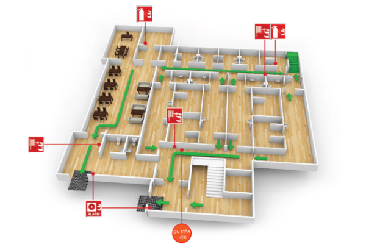

BIM Use: Disaster Planning

Disaster Planning
A process in which emergency responders would have access to critical building information in the form of a model and information system.
The BIM provides critical static building information (floor plans, equipment schematics, hazardous material locations), while the Building Automation System (BAS) provides dynamic information (sensor triggers, fire alarms). These systems are integrated to display where the emergency is located, possible routes to the area, and potential hazards.
- Provide police, fire, public safety officials, and first responders access to critical building information in real-time.
- Improve the effectiveness of emergency response by visualizing the exact location of the incident (e.g., specific smoke detector ID).
- Minimize risks to responders by identifying hazardous materials or structural risks before entry.
- Support egress planning and evacuation simulations.
- Integration: BAS (Building Automation System) linked to Record Model.
- Hardware: Mobile Tablets / Ruggedized Laptops for responders.
- Software: Emergency dashboard / viewer linked to cloud model.
- Ability to manipulate, navigate, and review BIM model for facility updates.
- Ability to understand dynamic building information through BAS.
- Ability to make appropriate decisions during an emergency based on visual data.